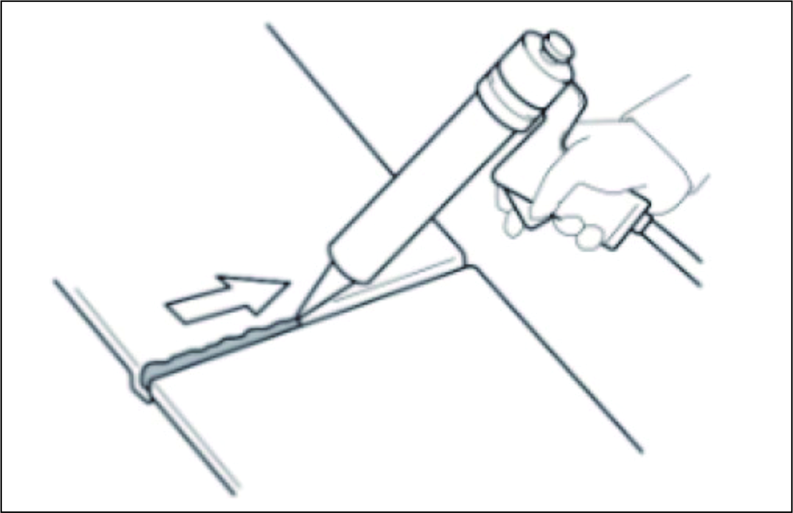
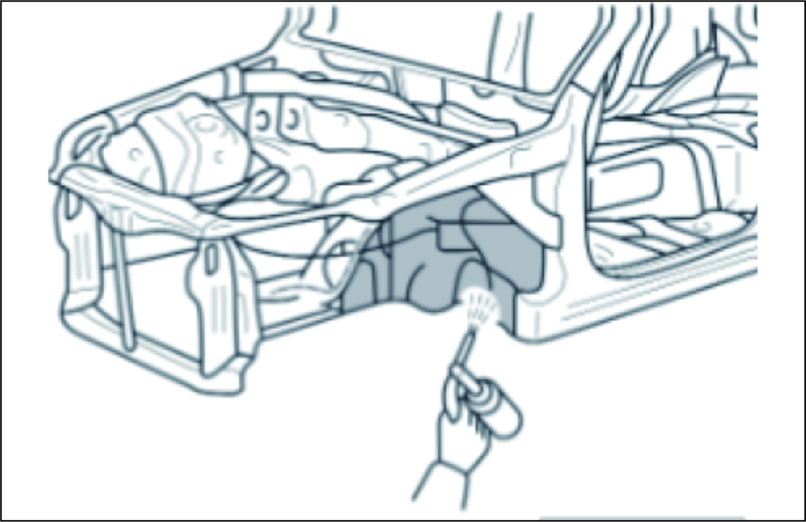
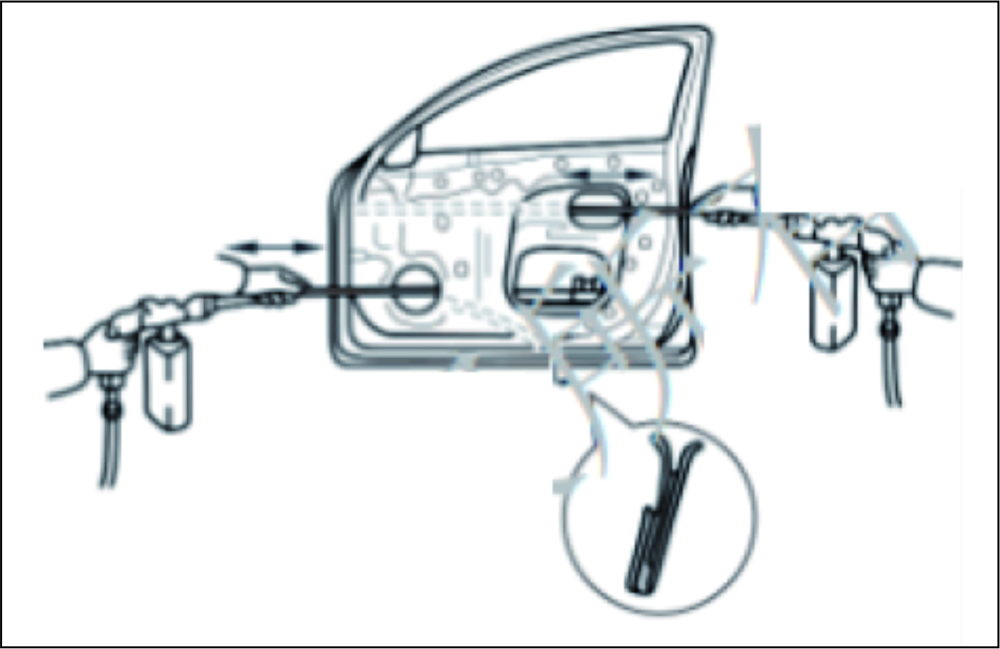

Антикоррозийная обработка (перед покраской):
Нанесение автомобильного герметика с помощью пневматического (электрического) пистолета является мерой защиты от влаги и коррозии; автомобильный герметик необходимо наносить на швы и завальцовки панелей дверей и капота;

Для предотвращения коррозии и защиты панелей кузова от повреждений летящими камнями нижнюю часть кузова и внутреннюю сторону колесных арок необходимо покрыть толстым слоем противоскольного покрытия.

Антикоррозийная обработка (после покраски):
Для предотвращения коррозии окрашенных участков на внутреннюю сторону завальцовок боковых дверей, капота, двери задка и багажника, а также в зоны сварки профильных сечений (петель, стоек и т. д.) необходимо нанести достаточный слой антикоррозийного состава (воска).

Антикоррозийная обработка методом окрашивания:
Во избежание коррозии и для защиты кузова от повреждений камнями из-под колес необходимо нанести противоскольное покрытие на днище кузова, внутреннюю сторону колесных арок и другие участки.